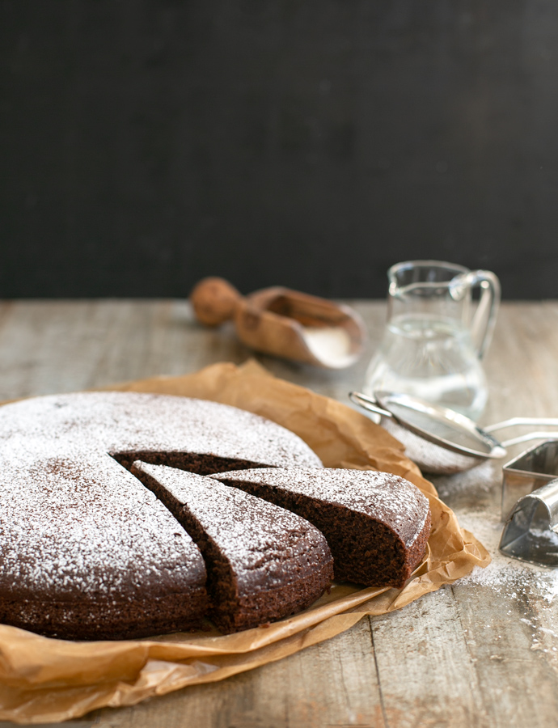

Water Cake

We were always used to prepare a cake at least once per week in my family, but then my sister developed lactose and egg intolerance, thankfully we stumbled upon this recipes, that allow you to get a cake almost as good as a normal one, but that she could enjoy too!
Ingredients:
- 300 g of flour type 00
- 180 g of sugar
- 90 g of seeds oil
- 16 g of baking powder
- 45 g of cocoa powder
- 2 ml of vanilla essence
- 330 ml of water
Preparation:
- Start by pre heating the oven at 180° C if static or 160° if ventilated
- Take an empty bowl and start sift the flour into it, after add the baking powder
- In another bowl add sugar and cocoa powder and pour in the water and start mixing
- When all is mixed with the water add the vanilla essence and mix some more
- After you are done mixing, add the oil and mix again
- Now we can finally add the flour and baking powder we had in the other bowl to the mix and do our final mixing
- Prepare a baking tray , you can either put some more oil around the bottom or you can put in a baking paper, both are for avoiding that the cake`s bottom will stick the the tray. When done pour in the mix and put the tray in the oven
- Let the cake cook for 30-40 minutes, before turning the oven off check by poking the cake with a stick or a knife that the inside of the cake is cooked and not still liquid, if still liquid let it cook another 10 minutes
- Remove from the oven when it`s done and let it rest at least 30 minutes before serving (be patient, you risk that the cake with crumble into pieces if you try to remove it immediately from the baking tray)
Enjoy!
Thanks again for browsing the site and checking my recipes!
If you haven`t yet, don`t forget to check my other recipes too!